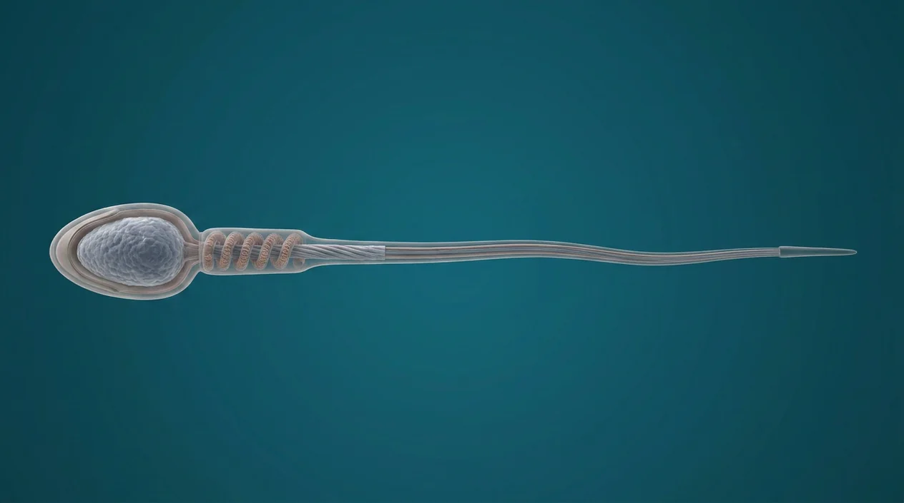

ORGAN → UNDER THE LENS
Seminiferous tubule · germ-cell lineage
Tap to compare the organ region with a tissue-level teaching illustration.
Read about Spermatogonium ↓Understand sperm structure, production in seminiferous tubules, meiosis, epididymal maturation and capacitation from a realistic digital teaching plate.

AcrosomeSperm neckSperm headMitochondrial midpieceHaploid sperm nucleusFlagellar axonemeFlagellumSperm production begins in testicular seminiferous tubules: spermatogonia give rise to meiotic spermatocytes, haploid spermatids and then shaped spermatozoa through spermiogenesis. Sertoli cells support developing germ cells; Leydig cells produce testosterone. The head contains a haploid nucleus beneath an anterior acrosome, the midpiece contains mitochondria and the flagellum supports movement. Sperm leaving the testis mature in the epididymis and acquire fertilizing capacity after capacitation in the reproductive tract. The digital plate exaggerates dimensions for legibility and is not a diagnostic semen micrograph.
These are educational cutaways, not literal magnifications of an organ pixel or laboratory slides. A ring marks the approximate tissue region; part-specific lines appear only where identifiable.
Tap to compare the organ region with a tissue-level teaching illustration.
Read about Spermatogonium ↓Sperm and egg are separate branches before fertilization. Obstetric gestational weeks are usually counted from the last menstrual period, roughly two weeks before conception. Digital labor-stage illustrations model separate moments, not clinical birth photographs or patient measurements.
Tap an image to enlarge and tap again to close. These are digital educational models, not microscope photos, measured ultrasounds, clinical birth images or exact developmental clocks.
Single enlarged sperm model; proportions are explanatory, not semen-analysis measurements.
Digital microscopic-scale tubule model: basal germ cells, maturing spermatids and interstitial tissue; not a real histology slide.
These 7 structures describe anatomy related to the chapter’s regional illustration. Each entry separates location, function and a clinical point.
Flattened cell head contains compact haploid paternal DNA and an anterior cap; the picture is enlarged, not to biological scale.
What it doesDelivers genetic material at fertilization.
Clinical connectionShape alone on this teaching image cannot establish fertility.
Picture context Single enlarged sperm model; proportions are explanatory, not semen-analysis measurements.
Enzyme-containing cap over the anterior head; actual molecular reactions cannot be observed in this model.
What it doesParticipates in penetration of the oocyte coverings after capacitation.
Clinical connectionAcrosome reaction occurs at contact with oocyte investments, not during testicular meiosis.
Picture context Single enlarged sperm model; proportions are explanatory, not semen-analysis measurements.
Condensed chromatin within the head contains one set of chromosomes following meiosis.
What it doesContributes paternal nuclear genetic material.
Clinical connectionNot all chromosome changes are visible by ordinary shape inspection.
Picture context Single enlarged sperm model; proportions are explanatory, not semen-analysis measurements.
Short connecting piece between head and midpiece carries centriolar structures.
What it doesConnects the head to the motile tail apparatus.
Clinical connectionTiny details are not independently resolved in the digital plate.
Picture context Single enlarged sperm model; proportions are explanatory, not semen-analysis measurements.
Thicker proximal flagellar segment has mitochondria arranged around the axonemal core.
What it doesProvides local energy supply for swimming.
Clinical connectionThe model is schematic and does not measure mitochondrial function.
Picture context Single enlarged sperm model; proportions are explanatory, not semen-analysis measurements.
Single long motile tail with principal and end pieces propelled by an internal axoneme.
What it doesDrives sperm through fluid; tract transport also involves other mechanisms.
Clinical connectionOne sperm has one flagellum in this reference model.
Picture context Single enlarged sperm model; proportions are explanatory, not semen-analysis measurements.
Microtubule-based motile core runs along the flagellum; its molecular pattern requires appropriate microscopy.
What it doesConverts motor-protein action to bending movement.
Clinical connectionNever pinpoint the microscopic axoneme on the whole-cell plate.
Picture context Single enlarged sperm model; proportions are explanatory, not semen-analysis measurements.
These 13 anatomy and development entries explain each stage without placing false pointers on an illustrative context plate.
Diploid precursor near the seminiferous tubule basement membrane enters the production lineage.
What it doesReplenishes and supplies germ cells.
Clinical connectionThis cell is not separately visible on the sperm-only image.
Picture context Digital microscopic-scale tubule model: basal germ cells, maturing spermatids and interstitial tissue; not a real histology slide.
Diploid cell that enters meiosis I within the seminiferous epithelium.
What it doesUndergoes homologous chromosome separation.
Clinical connectionNot a mature motile spermatozoon.
Picture context Digital microscopic-scale tubule model: basal germ cells, maturing spermatids and interstitial tissue; not a real histology slide.
Short-lived haploid cell produced by meiosis I and proceeding through meiosis II.
What it doesProduces spermatids after the second meiotic division.
Clinical connectionSpecific cell stages need microscopy and cannot be pinned on a whole sperm.
Picture context Digital microscopic-scale tubule model: basal germ cells, maturing spermatids and interstitial tissue; not a real histology slide.
Haploid round precursor differentiates without another division during spermiogenesis.
What it doesForms the shaped head and tail.
Clinical connectionSpermatids are not identical in morphology to ejaculated mature sperm.
Picture context Digital microscopic-scale tubule model: basal germ cells, maturing spermatids and interstitial tissue; not a real histology slide.
Remodels the spermatid: chromatin condenses, acrosome forms and flagellum grows.
What it doesConverts a round germ cell into a sperm-shaped cell.
Clinical connectionDo not confuse cellular shaping with meiotic reduction.
Picture context Digital microscopic-scale tubule model: basal germ cells, maturing spermatids and interstitial tissue; not a real histology slide.
Somatic support cell spans seminiferous tubules, nourishes germ cells and contributes to a blood-testis barrier.
What it doesSupports germ cell development and releases inhibin B.
Clinical connectionThe isolated sperm image does not show Sertoli cells.
Picture context Digital microscopic-scale tubule model: basal germ cells, maturing spermatids and interstitial tissue; not a real histology slide.
Interstitial testicular endocrine cell responds to luteinizing hormone and produces testosterone.
What it doesSupports spermatogenesis indirectly through hormonal signaling.
Clinical connectionDoes not become a sperm cell.
Picture context Digital microscopic-scale tubule model: basal germ cells, maturing spermatids and interstitial tissue; not a real histology slide.
Coiled testicular tubule houses stratified developing germ cells and Sertoli cells.
What it doesSite of sperm production.
Clinical connectionA single drawn sperm is not a histologic section through a tubule.
Picture context Digital microscopic-scale tubule model: basal germ cells, maturing spermatids and interstitial tissue; not a real histology slide.
Highly coiled duct alongside testis where sperm undergo functional maturation and storage.
What it doesConditions sperm motility before ejaculation.
Clinical connectionProduction begins in testis, not in epididymis.
Picture context A related regional anatomy model; the individual event or cell is not separately identifiable in this picture.
Muscular duct moves sperm from epididymis toward ejaculatory ducts during emission.
What it doesTransports stored sperm.
Clinical connectionContributes no new sperm nuclei after meiosis.
Picture context A related regional anatomy model; the individual event or cell is not separately identifiable in this picture.
Post-ejaculatory functional changes in sperm membrane and motility occur in the reproductive tract.
What it doesPrepares sperm for interaction with oocyte coverings.
Clinical connectionCapacitation is not the same as the acrosome reaction.
Picture context Single enlarged sperm model; proportions are explanatory, not semen-analysis measurements.
Secretions from seminal vesicles, prostate and other glands mix with sperm during ejaculation.
What it doesProvides transport medium and biochemical support.
Clinical connectionA semen analysis requires clinical sampling, not inference from this plate.
Picture context A related regional anatomy model; the individual event or cell is not separately identifiable in this picture.
Normal cells differ in appearance, and only laboratory-standard methods can assess morphology or motility.
What it doesPrevents treating one reference drawing as every gamete.
Clinical connectionA generic render cannot diagnose infertility.
Picture context Single enlarged sperm model; proportions are explanatory, not semen-analysis measurements.
Short answers grounded in the structures described above. Use the illustrated guide for anatomical context.
The head houses condensed haploid DNA and an acrosomal cap, the midpiece contains mitochondria, and a single flagellum supports movement. The illustration exaggerates proportions for learning, not semen analysis.
Developing germ cells reside in the seminiferous tubules of the testes, supported by Sertoli cells. Formed sperm then pass into the epididymis for further functional maturation.
After meiosis has produced haploid spermatids, spermiogenesis remodels the cells: nuclei condense and head, acrosome and flagellum develop. This shaping phase does not itself halve the chromosome number.
Mitochondria around the beginning of the tail support motility. A digital drawing cannot tell whether an individual patient’s sperm swim normally.
Capacitation involves functional membrane and motility changes after ejaculation within the reproductive tract. It prepares sperm for effective interaction with the oocyte coverings; it is distinct from the later acrosome reaction.
Follow these connected structures and body systems in the illustrated atlas.
 Egg cell · oocyte & ovulationA separate egg chapter: primary versus secondary oocyte, meiosis, zona pellucida, corona radiata and ovulation.↗
Egg cell · oocyte & ovulationA separate egg chapter: primary versus secondary oocyte, meiosis, zona pellucida, corona radiata and ovulation.↗ Testis & epididymis — microanatomyThe sperm-production organ from tunica through seminiferous tubule to rete, efferent ducts and epididymal tail.↗
Testis & epididymis — microanatomyThe sperm-production organ from tunica through seminiferous tubule to rete, efferent ducts and epididymal tail.↗ Female pelvis & perineumThe female pelvic floor in sagittal section: bladder and urethra, vagina and anteverted uterus, rectum behind — plus the ligaments and pouches that position them.↗
Female pelvis & perineumThe female pelvic floor in sagittal section: bladder and urethra, vagina and anteverted uterus, rectum behind — plus the ligaments and pouches that position them.↗General anatomy references and related source chapters for continued study. These links do not make the digital illustrations clinical images or certify every anatomical variant.
This educational page is not medical advice and has not undergone formal clinical peer review. Spotted an error? Contact the editor.
Open the regional digital plate, study entries and a short self-test. Visible markers occur only for identifiable sperm and oocyte structures.